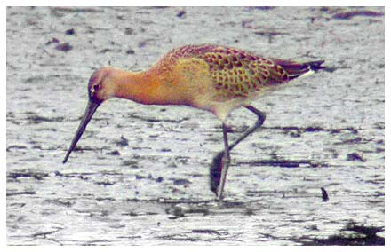

Black-tailed Godwit
An occasional visitor to the reservoir, more frequent in recent years.

05/03/76 - 7 birds. (HCS)?
12/08/04 - Single bird stayed 3 days while the water level was low
14/09/04 - Single bird stayed 2 days
22/01/06 - Single bird (DWH)
09/11/06 - Single bird (KGH)
20/08/08 - 5 birds (Lewis Bates) photo provided
29/08/09 - Single bird (DWH)
16/08/12 - 2 birds (RH)
01/08/13 - 4 birds (RH)
02/08/13 - 1 bird
08/08/13 - 1 bird
14/08/13 - 5 birds
16/08/13 - 1 bird
17/08/13 - 1 bird
31/08/13 - 1 bird
10/07/15 - 1 bird stayed 2 days
02/08/15 - 1 bird stayed 2 days
05/08/16 - 1 bird stayed 2 days
01/09/16 - 1 bird stayed 8 days, the longest staying individual (KGH)
27/07/20 - 3 birds
16/09/20 - 1 bird
10/09/20 - 1 bird
17/09/20 - 1 bird stayed 3 days
20/09/21 - 3 birds (DWH)
15/09/22 - 5 birds (Andy Farrar)
09/07/24 - 2 birds (DWH), 1 bird on 23/07 and 1 bird on 30/12 with 2 Avocets (DWH)
22/07/25 - 4 birds (DWH)